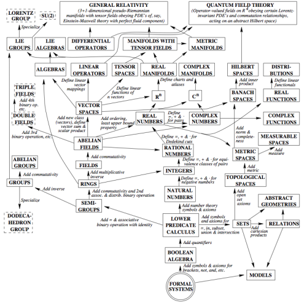
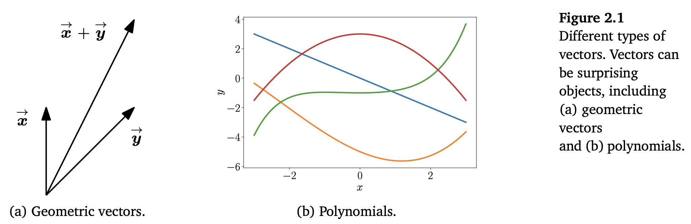
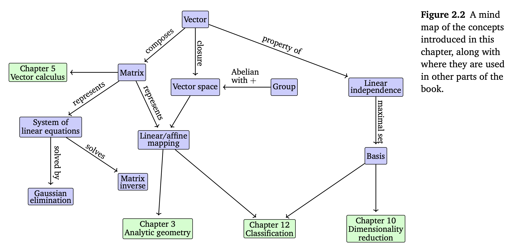
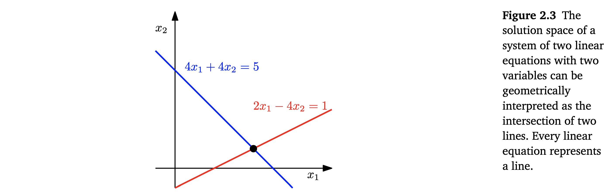
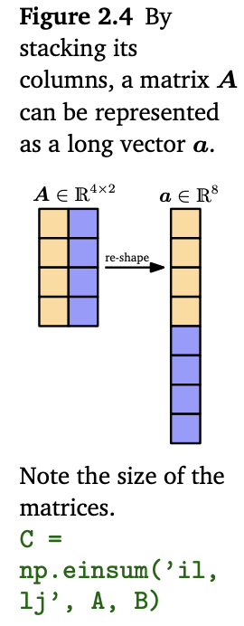

Table of Contents
시작하기
직관적인 개념을 형식화할 때, 공통적인 접근법은 다음과 같습니다.
- 객체(object, symbol)의 집합(set)을 만든다.
- 만든 객체들을 조작(manipulate)하기 위한 규칙을(rule) 만든다.
이러한 접근법으로 만들어진 개념들의 집합은 우리에게 대수(Algebra)라고 알려져 있습니다.

선형대수는 벡터(vector)와 벡터들을 조작하기 위한 규칙들을 연구하는 학문입니다.
벡터라고 하면 많은 사람이 고등학교에서 배운 geometric vector를 생각합니다. 하지만 책에서는 벡터의 일반화된 개념에 대해서 논의합니다.
벡터의 정의
A라는 유형을 갖는 객체가 있다고 가정해봅시다. 이때,
- 객체끼리 더함
- 스칼라(scalar, 상수)를 객체에 곱함
1), 2)라는 연산의 결과로 같은 유형의 객체(A라는 유형의 객체)가 나온다면 이를 벡터라고 정의합니다.
다시 말해, 수학적인 관점에서 벡터는 아래 두 성질을 충족하면 벡터로 간주합니다.
- 벡터끼리 덧셈 연산을(add) 했을 경우 벡터가 나옴
- 벡터에 스칼라를 곱했을 때, 벡터가 나옴
벡터에 대한 대표적인 예는 아래와 같습니다.
Geometric vectors:
Figure 2.1 (a) 에서 표현하고 있는 geometric vector는 고등학교 수학이나 물리에서 많이 배워 매우 친숙한 벡터입니다.
Polynomial vectors:
Figure 2.1 (b) 에서 표현하고 있는 polynomial(다항식) 또한 벡터입니다.
두 다항식은 서로 더해질 수 있으며, 더해진 결과 또한 다항식입니다. 그리고 다항식은 스칼라( )로 곱셈 연산을 해도 다항식입니다. 따라서 다항식 또한 벡터입니다.
그 외에도 3. Audio signals, 4. Elements of (tuples of real numbers)도 벡터입니다.
Audio signals, Elements of $R^{n}$은 내용상 크게 문제가 되지 않기 때문에 생략했습니다.
자세히 알고싶은 분들은 MML Book 18 page를 참고하시면 됩니다.

책에서 초점을 두고 설명하고자 하는 것
본 책에서는 다음과 같은 내용에 초점을 두고 선형 대수를 설명합니다.
- 선형 대수의 대부분 알고리즘은 공간에서 정의가 됩니다. 따라서 책에서는 주로 공간의 벡터에 대해서 초점을 맞춰 설명합니다. 특히 chapter 8에서 데이터를 공간의 벡터로 간주하고 설명할 것입니다.
- 유한 차원 벡터 공간에(finite dimensional vector space) 초점을 맞춥니다. 유한 차원 벡터 공간의 경우, 모든 종류의 벡터와 공간 간의 1:1 대응이 존재합니다.
선형 대수와 기계학습 알고리즘 간의 상관관계
만약 내가 새로운 연산자(operator)를 만들었다고 생각해봅시다. 이때, 내가 제안한 연산(operation)으로 만들어지는 것들의 집합은 무엇인가?라는 궁금증이 생길 수 있습니다.
이를 선형대수 관점에서 다시 생각해보면, 작은 벡터의 집합에서 시작해서 서로 더해지고, 스케일링 되었을 때의 그 결과인 벡터들의 집합은 무엇인가?와 같습니다. 이 질문에 대한 답은 Section 2.4에서 언급할 vector space가 됩니다. vector space의 개념과 속성은 기계학습 알고리즘의 기초가 됩니다.
선형대수는 기계학습과 수학에서 중요한 역할을 합니다. 이번 장에서 소개되는 개념들은 chapter 3에서 geometry에 대한 아이디어로 확장됩니다. chapter 5에서는 벡터 미적분(vector calculus)에 대해서 논의합니다. 벡터 미적분은 매트릭스 연산에 대한 지식이 필수적으로 요구됩니다. chapter 10에서는 PCA를 활용한 차원 축소를 위해 사영(projection)을 사용할 것입니다. chapter 9에서는 선형 회귀(linear regression)에 대해서 논의합니다. 선형 회귀에서 선형대수는 least-square problems을 푸는 중요한 역할을 합니다.

선형 시스템(Systems of Linear Equations)
선형 시스템은 선형 대수에서 중심적인 역할을 합니다. 많은 문제는 선형 시스템으로 형식화되며, 선형대수는 이를 풀 수 있는 도구를 제공합니다.
Example 2.1
어떤 회사가 리소스 가 들어가는 제품 을 생산합니다. 이때, 의 일부 파트를 생산하기 위해서 리소스 의 일부인 가 필요합니다. (, ).
우리의 목적은 한정된 리소스에서 얼마나 많은 제품을 만들 수 있는지에 대한 최적의 생산 계획을 찾는 것입니다. 예를 들어 “우리에게 리소스 가 있을 때, 제품 의 일부 파트인 를 얼마나 많이 생산할 수 있는가?”와 같은 질문의 답을 찾는 것이지요.
만약 우리가 제품과 대응되는 파트들 을 생산할 때, 다음과 같은 리소스가 필요하게 됩니다.
이때, 최적의 생산계획은 실수공간에 존재하게 됩니다. 따라서, 최적의 생산 계획은 아래의 선형 시스템을 만족하는 해를 찾으면 됩니다.
식 (2.3)은 일반적인 형태의 선형 시스템입니다.
은 시스템에서 미지수가 되며, 식 (2.3) 을 만족하는 해가 이 선형 시스템의 해가 됩니다.
Example 2.2
다음 선형 시스템이 있을 때,
이 선형 시스템은 해가 없습니다. (1)과 (2)를 더하면 입니다. 이 결과를 (3)과 빼게되면, 부등식은 모순이 됩니다. 이 경우에는 선형 시스템에 해는 없게 됩니다.
또 다른 선형 시스템을 살펴봅시다.
이를 위와 같은 방식으로 풀게 되면, 이 유일한 해(유일해; unique solution)가 됩니다.
마지막으로 아래 선형 시스템을 살펴봅시다.
이를 똑같이 풀어보면, (1)과 (2)를 더한 결과가 (3)과 같음을 확인할 수 있습니다.
이때, (1)과 (2)를 이용해서 , 을 얻을 수 있습니다.
$x_{3} = a \in R$로 자유 변수(free variable)로 정의하면, 다음과 같은 해를 찾을 수 있습니다.
이 해는 무수히 많은 해가 존재한다는 것을 의미하며, 기하학적으로 Figure 2.3과 같습니다.

일반적으로 실수값을 갖는 선형 시스템으로 구성된 시스템에서 우리는 아래와 같은 종류의 해를 구할 수 있습니다.
- 해가 없음
- 단 하나의 해
- 무한히 많은 해
선형 회귀(linear regression)은 Example 2.1과 같은 예제에서 선형 시스템을 풀지 못했을 경우 이를 푸는 방법입니다.
선형 시스템에 대한 기하학적 해석(Geometric Interpretation of System of Linear Equation)
두 개의 변수()를 갖는 선형 시스템에서 각각의 시스템은 - 평면에서 하나의 선이 됩니다.
만약에 각 시스템을 모두 만족하는 해가 있다면, 이 해는 각 선의 교집합이 됩니다.
이 교집합은 다음과 같은 형태로 나타납니다.
- 점이 되거나(교차)
- 선이 되거나(겹침)
- 공집합(평행; 해가 없음).
이를 확장하여 변수가 세 개가 된다면, 각 시스템은 면(plane)이 되며, 교집합은 선(line)이 됩니다.
이때의 교집합은 1)면, 2)선, 3)점, 4)공집합(해가 없음)으로 나타나게 됩니다.
행렬 (Matrices)
행렬 또한 선형 대수에서 중요한 역할을 합니다. 행렬은 선형 시스템을 간단히 표기하는데 사용하기도 하지만, Section 2.7에서 살펴볼 선형 함수(linear mapping)를 표현하기도 합니다.
행렬의 재밌는 주제를 논의하기 전에 먼저, 1) 행렬이 무엇이고, 2) 행렬로 어떤 연산이 가능한지 살펴봅시다.
Definition 2.1 (Matrix)
$m, n \in N,\ \ N \in R$인 $(m, n)$ 행렬 $A$는 $m$ rows와 $n$ columns으로 구성된 직사각형 구조를 갖습니다.
행렬의 원소 $a_{ij},\ i=1,…,m,\ j=1,…,n$ 는 $m\cdot n$ - tuple입니다.
일반적으로 $(1, n)$-행렬은 rows라고 부르고, $(m, 1)$-행렬은 columns라고 부릅니다.
rows, colums와 같이 특별한 행렬은 row, column vectors라고 부릅니다.
$R^{m \times n}$는 실수공간에 있는 $(m, n)$-행렬입니다.
$A \in R^{m \times n}$는 모든 $n$ columns의 행렬이 길게 붙여진 $a \in R^{mn}$과 같은 표현입니다.
행렬의 표현이 달라질 뿐이지, 벡터 개념에서는 벗어나지 않는다는 것에 주목합시다.
표현이 변경된 행렬은 다른 행렬을 더해도 같은 형태를 유지하는 행렬이며, 스칼라와 곱해도 같은 형태를 유지하는 행렬입니다.
추가적으로, 우리가 알고 있는 행렬곱의 연산자(opration)를 일부 변경하면 행렬 또한 행렬곱 정의가 가능합니다.

행렬의 덧셈과 곱셈
두 행렬 $A \in R^{m \times n}$, $B \in R^{m \times n}$의 합은 element-wise sum으로 정의됩니다
두 행렬 $A \in R^{m \times n}$, $B \in R^{n \times k}$가 있을 때, 행렬곱( $C = AB \in R^{m \times k}$)의 결과인 행렬 원소 $c_{ij}$는 다음과 같이 계산합니다
위와 같이 $A$의 $i$th row의 원소와 $B$의 $j$th columns의 원소끼리 곱하는 연산을 Section 3.2에서는 dot product라고 부르며, $A \cdot B$로 표기합니다.
Remark
행렬의 곱은 인접 차원이 같아야합니다. 예를 들어 $n \times k$ 행렬 $A$는 $k \times m$ 행렬 $B$와 곱셈 연산을 수행할 수 있습니다. 이때, 행렬 $B$는 행렬 $A$ 우측에 있어야만 합니다.
프로덕트(product) $BA$는 이웃 차원이 맞지 않기 때문에 정의되지 않습니다.
Remark
행렬 곱은 element-wise 연산으로 정의되지 않습니다. 프로그래밍 언어에서 종종 나타나는 array 간 element-wise 곱은 Hadamard product라고 부릅니다.
Definition 2.2 (Identity Matrix)
$R^{n \times n}$에서 단위행렬(identity matrix)은 대각방향으로는 1, 그 외에는 0을 갖는 $n \times n$- 행렬로 정의됩니다.
지금까지 우리는 행렬의 1) 합, 2) 곱, 3) 단위행렬에 대해서 정의했습니다. 이를 이용하여 매트릭스의 속성을 살펴보면 아래와 같습니다.
Associativity (결합법칙)
Distributivity (분배법칙)
Multiplication with the identity matrix (단위행렬과의 곱셈)
역행렬과 전치행렬
Definition 2.3 (Inverse)
정방행렬 $A \in R^{n \times n}$이 있을 때, 매트릭스 $B \in R^{n \times n}$와의 관계가 $AB = I_{n} = BA$라는 속성을 만족할 때, $B$는 $A$의 역행렬이라고 부르며 $A^{-1}$로 표기합니다.
모든 행렬 $A$가 역행렬 $A^{-1}$를 갖진 않습니다. $A$가 역행렬을 가지려면 $A$는 regular / invertible / nonsigular(정칙행렬) 이어야 합니다. 다른 경우는 singular / noninvertible (특이 행렬)이라고 부릅니다.
역행렬이 존재한다면, 이는 유일합니다. Section 2.3에서는 선형 시스템을 풀어 역행렬을 계산하는 일반적인 방법을 논의합니다.
Remark (Existence of the Inverse of a $2 \times 2$-matrix)
위와 같은 행렬이 있을 때, 두 행렬을 곱하게 되면 다음과 같은 행렬을 얻을 수 있습니다.
따라서 역행렬 $A^{-1}$은 아래와 같습니다.
이때, 이어야 합니다. Section 4.1에서는 가 -matrix의 행렬식(determinant)임을 살펴봅니다. 우리는 행렬식을 통해 행렬이 역행렬을 갖는지 확인할 수 있습니다.
Definition 2.4 (Transpose)
행렬 가 다음과 같을 때 , , 면 를 의 전치행렬(transpose)이라고 부릅니다. 전치행렬은 로 표기합니다.
역행렬과 전치행렬의 중요한 속성은 다음과 같습니다.
$AA^{-1} = I = A^{-1}A \
(AB)^{-1} = B^{-1}A^{-1} \
(A + B)^{-1} \neq A^{-1} + B^{-1} \
(A^{T})^{T} = A \
(A+B)^{T} = A^{T} + B^{T} \
(AB)^{T} = B^{T}A^{T}$$
Definition 2.5 (Symmetric Matrix, 대칭행렬)
$A \in R^{n \times n}$인 행렬이 대칭행렬이라면 $A = A^{T}$입니다.
대칭행렬은 정방행렬인 $(n, n)$-행렬에서만 가능하며, 역행렬을 가지며, 역행렬은 $A^{T}$입니다.
$(A^{-1})^{T} = (A^{T})^{-1} =: A^{-T}$
Remark (Sum and Product of Symmetric Matrices)
임의의 두 대칭행렬의 합은 항상 대칭행렬이 됩니다. $A, B \in R^{n \times n}$
대칭행렬의 곱은 항상 정의되지만, 결과는 일반적으로 대칭행렬이 아닙니다.
$\begin{bmatrix}
1&0 \
0&0\
\end{bmatrix}
\begin{bmatrix}
1&1 \
1&1\
\end{bmatrix} =
\begin{bmatrix}
1&1 \
0&0\
\end{bmatrix}$
스칼라에 의한 곱셈
행렬이 스칼라에 의해 곱해질 때를 고려해보겠습니다.
행렬 $A \in R^{m \times n}$과 스칼라 $\lambda \in R$가 있을 때, $\lambda A = K$입니다.
이때, 가 됩니다.
이때, $\lambda$는 $A$의 원소를 스케일링한다고 볼 수 있습니다.
스칼라가 $\lambda, \psi \in R$일 때, 행렬과 스칼라 곱의 성질은 아래와 같습니다.
Associativity (결합법칙)
Distributivity (분배법칙)
선형 시스템을 간단하게 표현하는 방법
위와 같은 선형 시스템이 있을 때, 선형 시스템을 하나하나 표기하는 것이 아닌, 계수(coefficient $a_{ij}$)들의 집합과의 관계로 표기하게 되면, 행렬곱으로 간소화하여 표현할 수 있습니다.
이때, 은 첫 번째 column을, 는 두 번째 column을, 은 세 번째 column을 스케일링한다고 볼 수 있습니다.
일반적으로 선형 시스템은 행렬 형태로( ) 간소화하여 표현할 수 있습니다.
프로덕트 $Ax$는 $A$의 columns의 선형 조합입니다. 우리는 Section 2.5에서 선형 조합에 대해서 논의해볼 것입니다.